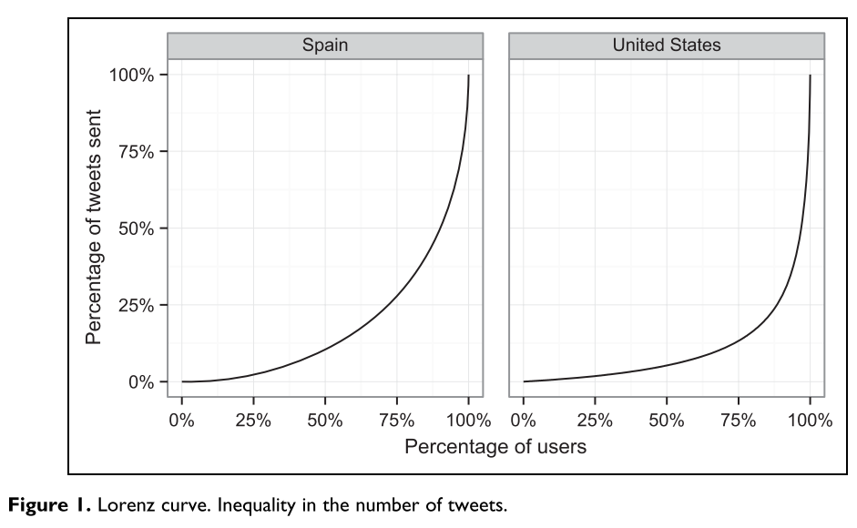
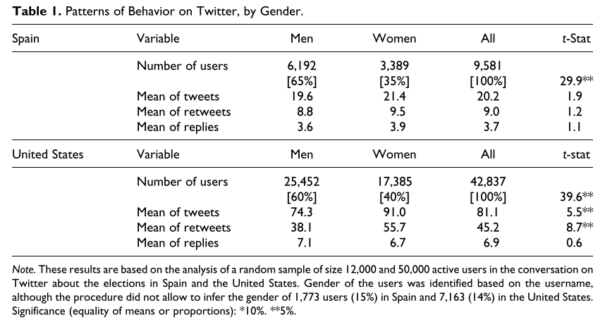
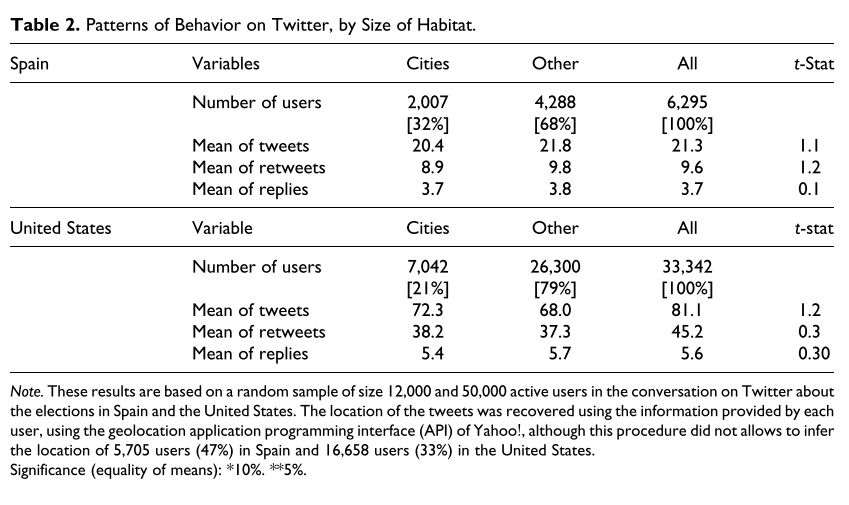
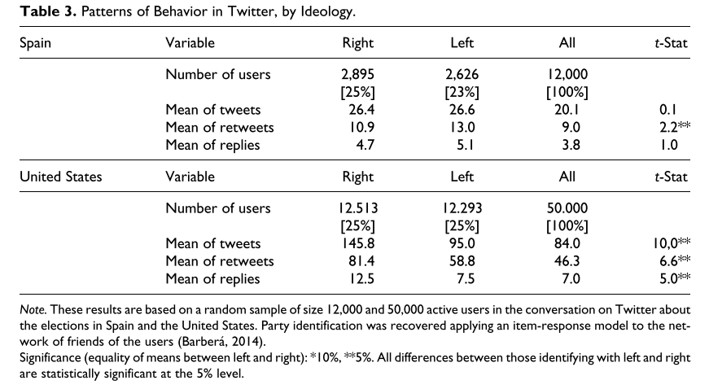
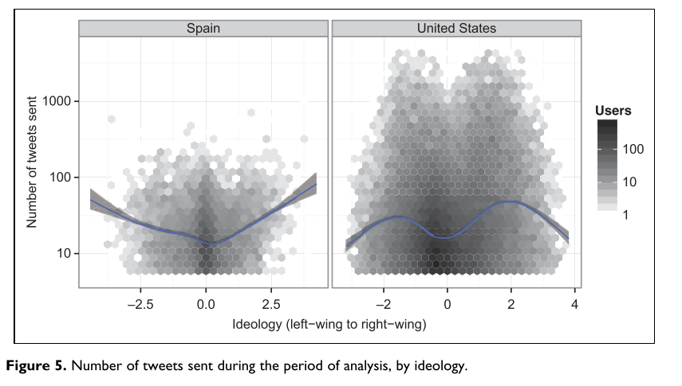
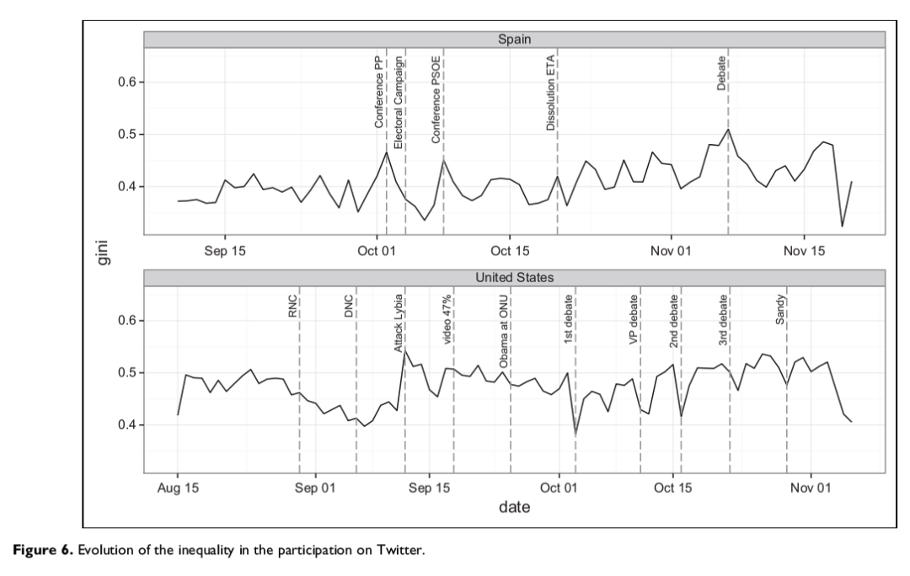

收录于合集
文献来源： Barberá, P., & Rivero, G. (2015). Understanding the political representativeness of Twitter users. Social Science Computer Review , 33(6), 712-729.
作者简介： Pablo Barberá，政治学博士，南加州大学政治学和国际关系系助理教授，Facebook核心数据科学团队的一名研究员。研究领域包括社交媒体与政治、计算社会科学，比较选举行为和政治代表；Gonzalo Rivero，政治学博士，舆观调查网数据科学主任。从事数据分析以及政治科学研究。
一、作为民意分析信息源的推特及其问题
近年来，随着推特（twitter）等微博客社交媒体的普及率越来越高，其政治用途也开始被政治家、选民和研究者所重视。作为易于接受的政治信息源与讨论平台，推特为研究选举和民意提供了绝佳机会。近年来在政治、经济、社会心理甚至公共卫生方面的推特研究层出不穷。如果这一研究路径可行，那么以推特为代表的社交媒体无疑将为社会科学研究提供庞大且即时的研究资料库。但仍有一些研究者对这一方法的准确性提出质疑：推特能否有效地反映线下的民意？抑或说：推特能否代表普遍的民意？
针对这一问题，一系列对德国、美国、新加坡、英国、丹麦和西班牙选举中，twitter民意与民意调查进行的十余项对比研究，都给出了乐观的结论：来自推特的数据所反映的选民态度与情绪，在很大程度上能够与传统民意调查结果相契合。这似乎意味着推特民意作为传统民意调查替代品的潜力（O’Connor et al,2010），更有学者直接喊出了自信的一问：“谁稀罕民调？（Oh, & Wang, 2010）”
尽管如此，仍有学者认为推特的这一预测能力是被简单化和夸大的结果。他们对上述学者的研究方法和结果提出了质疑，认为某些方法并不是最科学的方法，而是恰好得到有利于推特数据的结果的方法。自我选择偏差、某些群体被过度代表、过于简化的情绪分析是这些研究方法面临的三大挑战，大多研究中并没有采取手段来克服这些偏差。
本文作者的研究正是试图探究这些偏差。利用2011年西班牙议会选举和2012年美国总统选举相关的所有推文数据，作者对两国推特政治参与者的代表性和不平等性进行了分析。通过分析所选用户样本的社会人口特征和一系列政治变量，作者刻画了两国线上政治讨论的结构。
二、数据与方法
经过基于关键词的筛选，从两个选举前70天的所有推文中，作者得到了包含280万条推文、37.5万名用户的西班牙数据集，以及包含6200万条推文、880万用户的美国数据集。对这些数据的初步分析证实了作者对于参与平等性的担忧：在所选取的用户中，有47%的西班牙用户和48%的美国用户仅有一条推文与选举相关。在西班牙，前1%活跃的用户生产了34.8%的推文（美国44.6%），而前10%活跃的用户则生产了70.9%的推文（美国70.9%）。考虑到如此高的不平等程度与数据规模，作者随机抽取了1.2万西班牙活跃用户和5万美国活跃用户进行分析。然而正如Figure 1所示，即便在所选活跃用户中，参与不平等仍然处于相当高的水平。

本文的分析主要关注的因变量为推特使用中三个方面的度量：推文总量、转推数量、回复数量。既有研究多依赖于推文总量，但忽视了有些用户发的推文远多于另一些用户，而这又与一些关键的个人特征系统性相关。因此本文加入了转推数量和回复数量两个与互动性相关的指标，以弥补对推文总量指标的以来所带来的偏差。而这三个变量同时也是相互关联的。
本文所选择的自变量，是一些被证明与选民投票行为息息相关的变量，包括性别、地理位置、意识形态和竞选活动的时间点。如果这些变量与上述因变量有系统性关联，则意味着以推特为信息来源，且疏于控制变量的的选举研究存在着系统性偏差。
性别变量的获取利用了识别不同名称性别偏向的大数据和机器学习来完成，在两个案例中，这一分类方式的准确性都高于70%。地理位置变量结合了用户注册时所填写的信息以及用户发推时所在的位置，所得推特用户的地理分布并未显著区别于全国人口分布（见下图）。意识形态变量基于用户关注的政治行动者的立场进行推断，这是因为作者假定用户更愿意关注与其意识形态相似的政治行动者。竞选活动的时间点之所以重要，一是因为政治兴趣较低的选民往往在竞选活动的过程中才会决定投谁的票，二是由于在本文所选案例中，主要政党的网络竞选策略显著不对称，其进入互联网进行活动的时间有着明显差异。
三、结果
意料之中，本文研究最为显著的结果是twitter政治参与中严重的性别不平等。如Table 1所示，性别不平等在数据上有着肉眼可见的体现：60%以上的参与者是男性。即便如此作者还是在统计上拒绝了性别平等的原假设。尽管表中显示女性其实是更为活跃的一方，但这一微小的差距不足以填补巨大的代表性赤字，更毋论女性更活跃的结论仅在美国的案例中得到了统计支持。

关于地理位置，尽管在变量处理过程中并未发现推特用户的地理分布显著区别于人口分布，但这不足以证明推特用户具有强地理代表性。因为分布数据并未考虑用户的城乡分布，而城乡差异对投票行为有着极为显著的影响。在将发推的地理位置归入不同人口规模的城市后（西班牙选出人口超50万城市，美国选出人口超100万城市），Table 2的结果证实了小地方显然处于代表性不足的状态：以西班牙为例，仅17%的全国人口住在超50万人口的城市之中，但在推特用户中，这一比例却高达32%。

在随后对意识形态的变量分析中，作者将意识形态处理为以0为中心，标准差为1的变量，小于0为左（自由主义），大于0为右（保守主义）。作者在此分析了有明确意识形态核心（即意识形态变量显著不为0）的用户。Table 3展示了这一分析的结果。

可见意识形态被明确识别为左与右的用户，其各项推特使用指标均大于平均水平。这更是意味着，相比于意识形态更加中立的用户，意识形态更为极端的用户更加活跃。换句话说，推特上的政治讨论主要由意识形态极端的公民所驱动的，这对政治讨论的两极分化非常有利。另外作者还发现了存在于左派与右派用户的推文中的微妙区别，意识形态的分布在两国之间同样存在着差异。在西班牙，右派用户的结构更有层次；在美国，右派的用户则更加活跃。进一步的数据分析也证明了这些结论，结果见Figure 5。

在对最后一个变量——时间变量的分析中，作者探讨了随着时间推移以及不同选举事件的出现，推特用户政治参与的不平等有何变化。结果如Figure 6所示，横坐标表示时间的推移，而纵坐标（基尼系数）表示不平等性，值越高，参与越不平等。

一般而言，临近选举的时间点上，候选人的竞选活动会显著增多，但这似乎在两国造成了不同的影响：在西班牙，这些选举事件增加了不平等，也就是增加了最活跃用户的活跃度；而在美国，虽然情况更为复杂，但总体来看竞选活动降低了不平等性。这更说明，若针对推特用户政治行为和态度的研究没有考虑以上变量的控制以及特殊的政治环境，得到的结果将非常不可靠。
四、结论
推特的确提供了研究民意的机会，无数用户每天都在提供有价值的研究材料。但是研究者能否从这个宝藏中得到有意义的结论，则取决于是否有能力克服参与的不平等所带来的偏差。本文针对2011年西班牙议会选举和2012年美国总统选举中推特使用的研究揭示了可能存在于推特用户中的参与不平等，如参与者多为男性、居住在城市、有着更强的意识形态偏好等等，这些群体在推特上都被过度代表（over- represented）了。但作者认为，这种对推特用于选举和民意研究缺陷的揭示更像是一个机会，或许会带来民意研究方法上的又一次大发展。
编者注：
作者在文中曾提到，在推特的覆盖程度达到相当高之前，推特所展现的民意都将存在偏差。而编者则对此更加没有信心：相比于用户的社会人口特征所带来的偏差，互联网信息和讨论环境所带来的偏差或许更加严重。互联网和社交媒体普及无限接近总人口之日，是否为互联网政治、网络民主的成熟之时，尚需研究者继续思考和求证。
编译：殷 昊 审校：杨端程 编辑：康张城
【政文观止Poliview】系头条号签约作者